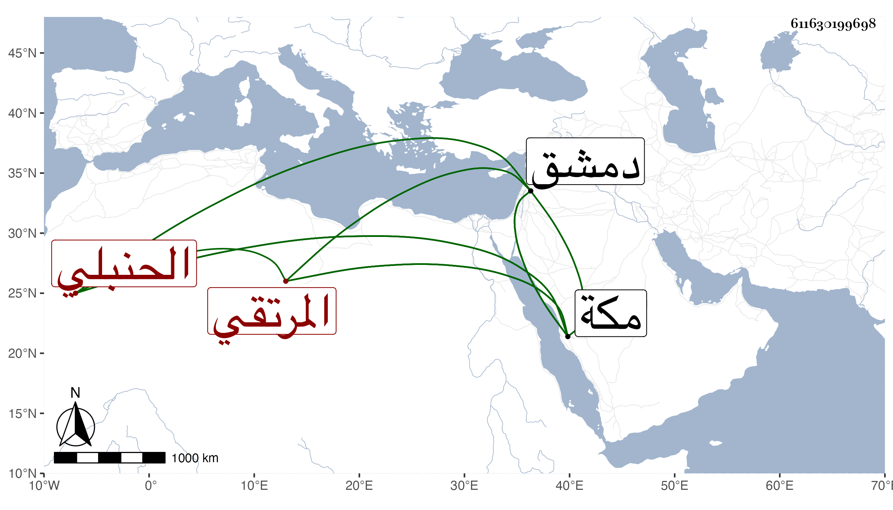

0902Sakhawi.DawLamic.ITO20230111-ara1.EIS1600.611630199698
Biography ID: 611630199698
618
أحمد بن محمد المرتقي الحنبلي . قال شيخنا في أنبائه أحد فضلاء الحنابلة اشتغل قليلا وناب في الحكم وكان خيرا صالحا . مات في عشري ذي القعدة سنة تسع عشرة ، ثم أعاده في التي بعدها فلم يسم أباه ونسبه البرنقي بالموحدة والنون وقال : الدمشقي ثم المكي كان يؤدب الأولاد بدمشق وكان خيرا كثير التلاوة ثم أنه توجه إلى مكة وجاور بها نحوا من ثلاثين سنة وتفرغ للعبادة على اختلاف أنواعها ، وأضر في آخر عمره ، ومات بمكة ، وكذا ذكره النجم بن فهد في ذيله على التقي الفاسي مما نقله من ذيل الأعلام في المشتبه لابن ناصر الدين فقال : أحمد البرنقي الدمشقي ثم المكي الشيخ الصالح العابد الناسك الزاهد شهاب الدين أبو العباس كان يؤدب الأبناء بدمشق بالسنجارية ثم بالكلاسة خيرا كثير التلاوة ثم تركه وتوجه لمكة فجاور بها نحوا من ثلاثين سنة متفرغا للعبادة والتلاوة والصلاة والطواف والحج والاعتمار مقصودا بالفتوحات مع تقنعه بالنساخة ولكن أضر قبل موته بمدة . مات سنة إحدى وعشرين . قلت ورأيت من ترجم أحمد بن عبد الله بن أحمد البريقي شهاب الدين الشيخ الإمام الصالح العابد سمع كثيرا وتوفي كبيرا في رمضان سنة إحدى وعشرين وقد بلغ السبعين وهو هذا ولكن الظاهر أنه غير الحنبلي الأول .
